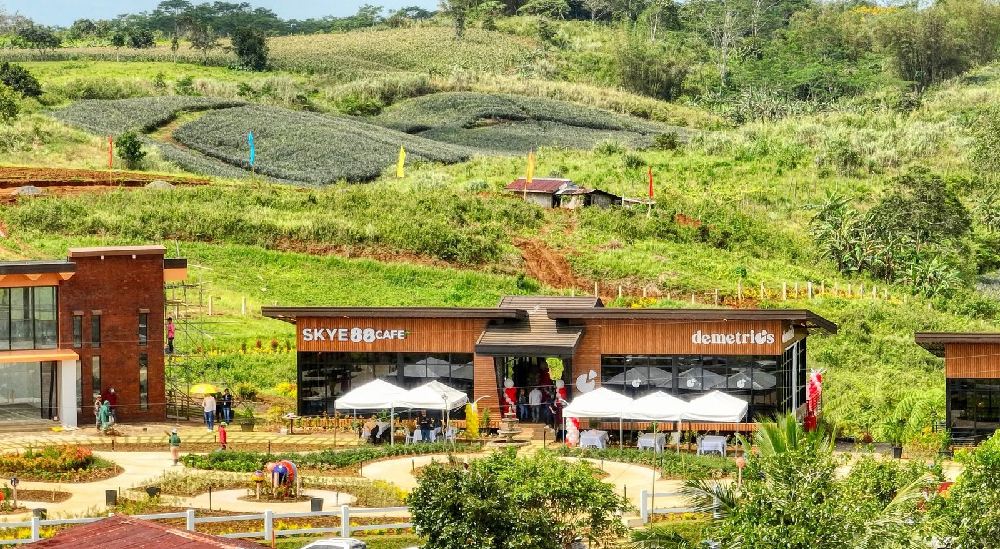
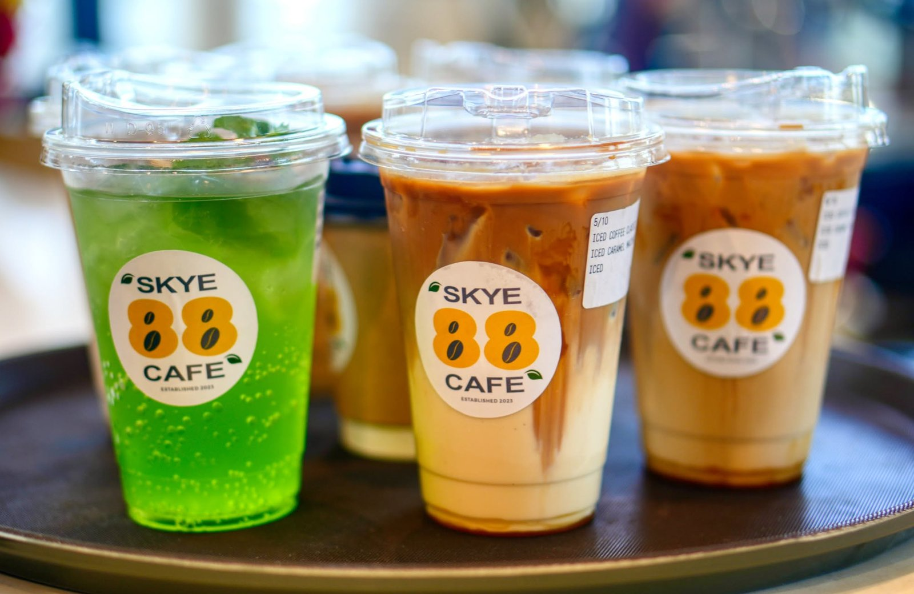
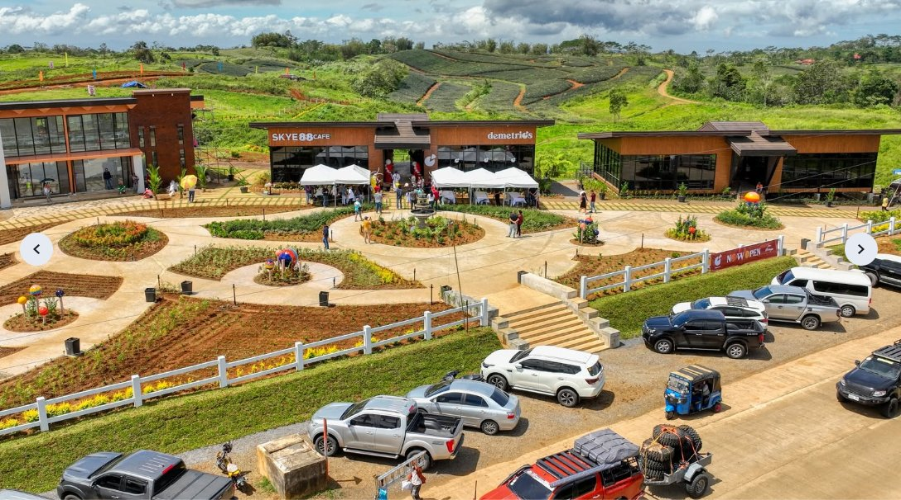

Skye 88 Cafe
Glass-house café inside Hiraya Farm Escape




About Skye 88 Cafe
Skye 88 Cafe is a modern glass-house destination café nestled inside the expansive Hiraya Farm Escape complex in Barangay Lanise, Claveria. Its floor-to-ceiling glass walls give visitors an unobstructed view of Claveria's rolling green hills and foggy mountain horizons.
Location
Directions on Google Maps
Explore the area
Inside Hiraya Farm Escape, Route 955, Barangay Lanise, Claveria, Misamis Oriental
Pan or zoom to explore. Use Google Maps for turn-by-turn directions. Map data © OpenStreetMap contributors.
More coffee shops & restaurants in Claveria
 4 photos
4 photosJaCo's Stopover
Garden stopover for coffee, pasta & local delicacies Zone 1, Barangay Luna, Route 955, Claveria 5 photos
5 photosThe Promise Cafe
Scenic café & restaurant on Claveria Road Claveria Road, Claveria, Misamis Oriental 4 photos
4 photos